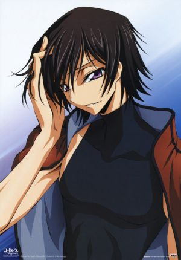
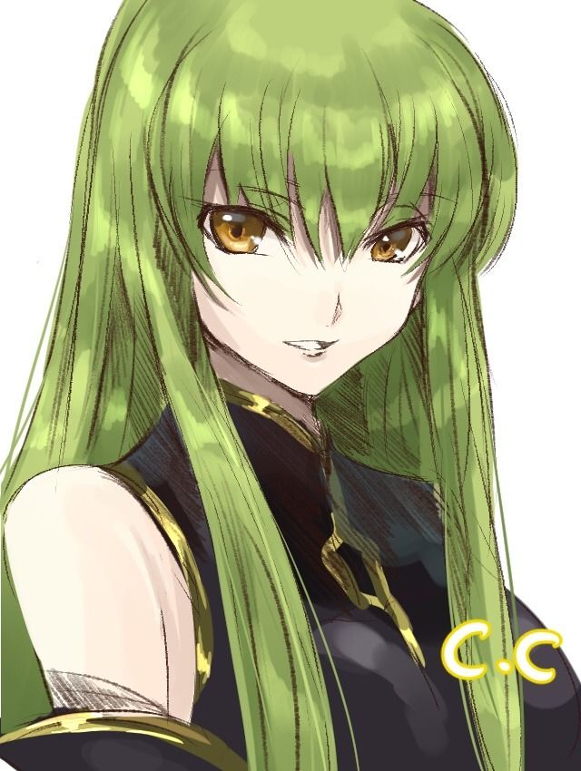

Lamperouge Lelouch
A former evil emperor who had a resurrection.
Has an absolute power Geass that can give any command to anyone.

C.C
A immortal girl who gave Geass to Lelouch travels the world for a purpose.
Kururugi Suzaku
A friend of justice who defeated the evil emperor Lelouch.
While he was with Nannally, they are attacked by a mysterious organization.
Nunnally Lamperouge
Lelouch's sister, who was caught in the mother's assassination and was deprived of her legs. She works as an honorary adviser to the World Humanitarian Aid Organization.
Bitur
Holy priest of Jilkustan. Her goal is to lead Jilkustan to victory with the power of prophecy.

Shario
He is Simmun's and Simmna's brother. Although his body is inconvenient, it has high maneuverability technology of his Nightmare.
Shestal
He is the son of Volbona, and the commander of Sihamna.
Stadtfeld Kallen
A pilot of the Black Knights. While living in college as a request of the Black Knights, she enters Jilkustan.

Gottwald, Jeremiah
After Zero Requiem, he ran an farm with Anya.
Cornelia li Britannia
The second princess of the former Britannia Empire, serving as a super-consolidated officer.
Anya Alstreim
Former Knight. She is helping the farm now.

Lloyd Asplund
Former engineer of Lancelot and a special dispatch guidance technical department.
Two years of light. The world gathered around reorganized nations and enjoyed peaceful days.
However, the peace ends suddenly. Suzaku accompanied Nunnally's refugee camp consolation as a man – Null of the Mask had been lost
by a mysterious nightmare frame, and the two were taken away. Schnezel's daughter suffered and went to the Kingdom of Warriors · Zirukstan
Karen, Lloyd, Saki Kozo are attacked there by a mysterious Geass user. And there was C. C. in the place called Ruber, "former master".
In an invincible kingdom that once broke the army of the British Empire, human desire is hope or despair.
In fact, the people of Zilkstan royal palace, over Geass and the speculation of C.C.